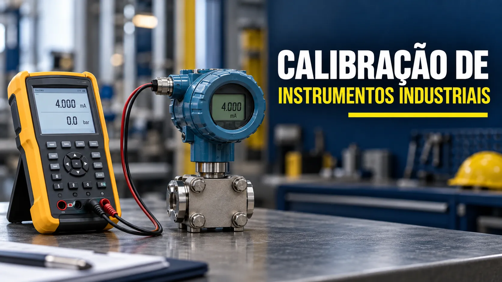

Calibração de instrumentos industriais: método, erro e incerteza
Conteúdo técnico: ALOGY Engenharia · Revisado em: 14/09/2026

Calibração não é apenas “ver se o instrumento está certo”. Ela estabelece, sob condições especificadas, uma relação documentada entre valores fornecidos por referências e as indicações do sistema de medição, considerando as incertezas aplicáveis. Essa relação pode então ser usada para obter um resultado de medição a partir da indicação.
Na indústria, a utilidade desse resultado depende de outra pergunta: a medição é adequada para a decisão do processo? Pressão, temperatura, vazão, nível, massa, pH e outras variáveis podem alimentar controle, alarmes, balanços, qualidade, segurança ou apenas indicação local. O mesmo erro pode ser irrelevante em uma função e crítico em outra.
Calibração, verificação, ajuste e teste funcional
Usar os termos corretamente evita relatórios ambíguos e intervenções prematuras. A fronteira deve ser declarada antes do trabalho.
| Atividade | Pergunta respondida | Registro esperado | O que não prova sozinha |
|---|---|---|---|
| Calibração | Qual relação existe entre valores de referência e indicações, nas condições declaradas? | Valores, condições, referências, resultados, incertezas e identificação do sistema avaliado. | Não declara conformidade automaticamente e não implica ajuste. |
| Verificação | O item atende a requisitos especificados para aquela checagem? | Critério, método, evidência e conclusão conforme regra definida. | Não substitui uma calibração quando é necessário conhecer a relação metrológica. |
| Ajuste | Que intervenção modificou a indicação ou resposta? | Condição encontrada, parâmetros alterados e nova avaliação. | Não apaga a necessidade de registrar o estado anterior. |
| Teste funcional | O sistema responde, sinaliza, controla ou intertrava como previsto? | Condição, estímulo, resposta, lógica e limitações do teste. | Não demonstra, por si só, desempenho metrológico em toda a faixa. |
| Teste de loop | O sinal percorre corretamente campo, cabeamento, cartão, escala e sistema? | Pontos simulados, valores em cada etapa e desvios encontrados. | Não substitui a calibração do sensor ou transmissor. |
Defina a fronteira do sistema de medição
Um resultado só é interpretável quando está claro o que foi incluído. “Calibrar a temperatura” pode significar testar apenas um transmissor por simulação elétrica, comparar o sensor em uma fonte térmica, avaliar sensor e transmissor juntos ou verificar toda a cadeia até o sistema de controle.
- Sensor: elemento que responde à grandeza, como RTD, termopar, célula de carga ou eletrodo.
- Transmissor: eletrônica que converte a variável em sinal padronizado ou comunicação digital.
- Indicador ou controlador: equipamento que recebe, exibe e eventualmente atua sobre o processo.
- Malha instalada: inclui alimentação, barreiras, cabeamento, cartão, escala e software.
- Conjunto mecânico ou de processo: pode incluir linhas de impulso, selos remotos, termopoços, tomadas, condicionamento de amostra ou montagem.
Quanto maior a fronteira, mais efeitos de instalação e integração podem aparecer. Por outro lado, uma calibração restrita à eletrônica não permite concluir sobre sensor, montagem ou processo. O relatório deve declarar essa limitação.
Erro, correção, incerteza, tolerância e regra de decisão
Esses conceitos têm funções diferentes e não devem ser combinados como se fossem um único número.
| Conceito | Uso prático | Cuidado de interpretação |
|---|---|---|
| Erro observado | Diferença entre a indicação e o valor de referência para um ponto e condição. | É um resultado daquela comparação; não representa automaticamente todas as condições de uso. |
| Correção | Valor que pode ser aplicado para compensar um efeito sistemático conhecido. | Normalmente tem sinal oposto ao erro e também possui incerteza. |
| Incerteza de medição | Caracteriza a dispersão dos valores atribuídos ao mensurando com base nas informações disponíveis. | Não é sinônimo de erro, tolerância ou “dúvida do técnico”. |
| Tolerância | Limite especificado para uma função, produto, processo ou requisito. | Não deve ser inventada pelo relatório quando o requisito não foi definido. |
| Regra de decisão | Explica como resultado e incerteza serão usados em uma declaração de conformidade. | Deve ser acordada ou definida antes da conclusão, inclusive quanto ao risco de decisão. |
Erro observado = indicação − valor de referênciaCorreção = − erro estimadoA fórmula ajuda a descrever o ponto, mas não resolve a conformidade. Uma comparação “erro menor que tolerância” pode ignorar a incerteza e o risco de decisão. Documentos como JCGM 106 e ILAC G8 tratam justamente do papel da incerteza e das regras de decisão nas declarações de conformidade.
Rastreabilidade é propriedade do resultado
Rastreabilidade metrológica relaciona um resultado a uma referência por uma cadeia documentada e ininterrupta de calibrações, cada uma contribuindo para a incerteza. Portanto, o termo deve se referir ao resultado de medição, não a uma empresa, laboratório ou instrumento isolado.
Também não basta possuir um padrão com certificado. É necessário controlar o processo de medição, o estado dos padrões, as condições, o método, as contribuições de incerteza e a cadeia utilizada. Mesmo uma rastreabilidade bem sustentada não garante adequação ao uso: a incerteza precisa ser compatível com a necessidade da medição.
Bancada, campo e teste de loop: quando usar cada abordagem
| Abordagem | Vantagem | Limitação | Exemplo de uso |
|---|---|---|---|
| Bancada | Maior controle de condições, conexões e sequência do ensaio. | Pode não reproduzir montagem, processo, cabeamento ou forças instaladas. | Transmissor removido, manômetro, indicador, conversor I/P. |
| Campo | Permite avaliar o item em sua instalação e identificar efeitos locais. | Condições ambientais, acesso, processo e segurança podem limitar o ensaio. | Comparação de transmissor instalado, analisador e sensor acessível. |
| Teste de loop | Confere a cadeia de sinal e a escala até CLP, IHM ou supervisório. | Uma simulação no campo pode não avaliar o sensor real. | Comissionamento, manutenção após cabeamento ou troca de cartão. |
| Teste funcional | Confirma resposta operacional, alarme, lógica ou atuação. | Não caracteriza necessariamente erro e incerteza em toda a faixa. | Intertravamento, alarme, comando de válvula ou sequência. |
Em muitos casos, a melhor estratégia combina abordagens: calibração do instrumento ou conjunto definido, teste de loop para a cadeia e teste funcional para a resposta da automação.
Como planejar uma calibração útil
- Defina a decisão. Identifique o que depende da medição: controle, qualidade, segurança, balanço, manutenção ou indicação.
- Defina o mensurando e a fronteira. Declare grandeza, faixa, unidade, condições e componentes incluídos.
- Escolha os pontos. Distribua pontos para revelar comportamento relevante, incluindo subida, descida ou repetição quando aplicável.
- Selecione a referência. Confirme faixa, resolução, incerteza, estabilidade, condição documental e adequação ao método.
- Defina o critério antes do ensaio. Registre tolerância, regra de decisão e tratamento da incerteza quando houver declaração de conformidade.
- Controle as condições. Registre ambiente, alimentação, pressão, montagem, estabilização e outras influências relevantes.
- Preserve os dados. Mantenha leituras brutas, as-found, intervenção, as-left, cálculos e limitações.
- Analise tendência e histórico. Use resultados anteriores para investigar deriva e ajustar o programa, sem periodicidade automática.
Exemplo fictício: transmissor de pressão de 0 a 10 bar
Considere um transmissor fictício configurado de 0 a 10 bar. O exemplo abaixo mostra somente como organizar os dados; não representa tolerância ou capacidade real de um modelo. A referência, a incerteza e a regra de decisão precisam constar no procedimento ou contrato.
| Referência | Indicação as-found | Erro as-found | Indicação as-left | Erro as-left | Observação |
|---|---|---|---|---|---|
| 0,00 bar | 0,04 bar | +0,04 bar | 0,00 bar | 0,00 bar | Ponto inferior |
| 2,50 bar | 2,56 bar | +0,06 bar | 2,50 bar | 0,00 bar | 25% da faixa |
| 5,00 bar | 5,09 bar | +0,09 bar | 5,01 bar | +0,01 bar | 50% da faixa |
| 7,50 bar | 7,61 bar | +0,11 bar | 7,50 bar | 0,00 bar | 75% da faixa |
| 10,00 bar | 10,12 bar | +0,12 bar | 10,01 bar | +0,01 bar | Ponto superior |
O maior erro observado na condição encontrada é +0,12 bar. Isso descreve o resultado, mas ainda não autoriza uma conclusão de conformidade. Seriam necessários, no mínimo, a tolerância aplicável, a incerteza associada e a regra de decisão. Se o ajuste foi autorizado, a tabela mantém a evidência as-found e mostra os resultados as-left sem apagar o histórico.
Uma avaliação completa também pode incluir descida e repetição para observar histerese e repetibilidade. A quantidade de pontos deve responder ao risco e ao comportamento esperado, não a um número fixo usado em qualquer situação.
De onde vem a incerteza?
Um orçamento formal depende do modelo de medição e do método. Em uma calibração industrial, contribuições possíveis incluem:
- incerteza declarada e deriva da referência;
- resolução da referência e do item avaliado;
- repetibilidade e histerese observadas;
- temperatura, pressão atmosférica, umidade, vibração ou alimentação;
- montagem, alinhamento, coluna hidrostática, conexão e vazamentos;
- estabilidade da fonte ou do processo;
- conversão de unidade, interpolação, linearização e arredondamento;
- efeitos não incluídos quando a fronteira do ensaio é parcial.
Listar contribuições não substitui uma avaliação de incerteza. É preciso justificar modelo, distribuições, correlações, dados, coeficientes de sensibilidade e forma de combinação conforme o método aplicável.
Conformidade e regra de decisão
Quando o relatório precisa afirmar “conforme” ou “não conforme”, a regra de decisão define como a incerteza é considerada. Uma regra simples pode aceitar pelo limite da especificação; outra pode usar uma faixa de guarda para controlar o risco de aceitação ou rejeição incorreta.
Não existe escolha universal. A regra deve ser comunicada e acordada quando não estiver implícita na especificação ou norma aplicável. Se o escopo não autoriza uma declaração de conformidade, o relatório pode apresentar resultados, erros e incertezas sem converter automaticamente os números em aprovação.
Como definir o intervalo de calibração
Periodicidade não deve ser escolhida apenas por hábito. O intervalo pode considerar criticidade, estabilidade histórica, deriva, severidade de uso, ambiente, frequência de manutenção, recomendações do fabricante, consequências de uma medição inadequada e requisitos regulatórios ou contratuais.
Resultados sucessivos permitem revisar o intervalo. Um instrumento estável pode justificar reavaliação do programa; um item com deriva, impacto elevado ou intervenções frequentes pode exigir maior controle. O ILAC G24 apresenta métodos para determinação e revisão de intervalos sem impor um único prazo.
O que um registro técnico deve conter
- identificação do item, TAG, fabricante, modelo, série, faixa e unidade;
- mensurando, fronteira, método, procedimento e condições do trabalho;
- padrões e referências utilizados, com identificação e situação documental;
- pontos, sequência, estabilização, leituras brutas e cálculos;
- resultados as-found e as-left claramente separados;
- incerteza e rastreabilidade declaradas para os resultados abrangidos;
- tolerância, regra de decisão e declaração de conformidade, quando aplicáveis;
- ajustes, reparos, peças, configurações e limitações observadas;
- data, local, condições e identificação dos responsáveis pelo registro e aprovação.
Erros comuns em programas de calibração
| Erro de gestão ou execução | Consequência | Abordagem melhor |
|---|---|---|
| Calibrar e ajustar sem registrar as-found | Perde-se evidência sobre impacto anterior no processo. | Registrar antes da intervenção e investigar produtos ou lotes afetados quando necessário. |
| Usar tolerância genérica | O critério pode ser insuficiente ou excessivo para a função. | Relacionar o limite à necessidade de medição e à decisão do processo. |
| Confundir certificado com rastreabilidade automática | A cadeia e o processo de medição do usuário ficam sem sustentação. | Documentar resultado, cadeia, incerteza, método e controle dos padrões. |
| Ignorar a fronteira do teste | Conclui-se sobre sensor ou processo quando apenas a eletrônica foi simulada. | Declarar componentes incluídos e limitações. |
| Fixar periodicidade sem histórico | Recursos são desperdiçados ou riscos permanecem sem controle. | Revisar intervalos com criticidade, deriva e desempenho observado. |
| Emitir conformidade sem regra definida | O risco da decisão fica implícito ou inconsistente. | Definir regra, tolerância e tratamento da incerteza antes da conclusão. |
Conteúdos por tipo de instrumento
Use a página-pilar como ponto de partida e avance para o método específico da variável ou equipamento:
Ferramentas de apoio
Avaliação, manutenção e conferência funcional de instrumentos
A ALOGY estrutura escopos para avaliação, inspeção, diagnóstico, manutenção, configuração, teste de loop e conferência funcional de instrumentos e malhas, em campo ou por recebimento do equipamento, conforme variável, faixa, modelo, condição, segurança, recursos e logística confirmados na proposta.
Calibração formal, ensaio específico, rastreabilidade ou documentação metrológica somente são incluídos quando padrões, métodos, recursos e parceiros necessários estiverem confirmados no escopo. Não há promessa automática de certificado próprio.
Perguntas frequentes
Calibração e ajuste são a mesma coisa?
Não. A calibração estabelece uma relação entre valores de referência e indicações, com as incertezas aplicáveis. O ajuste altera o sistema de medição para obter uma resposta prescrita. A condição encontrada deve ser registrada antes do ajuste e a condição final deve ser avaliada novamente.
Um certificado torna o instrumento rastreável?
A rastreabilidade metrológica é propriedade de um resultado de medição. Ela exige uma cadeia documentada e ininterrupta de calibrações, cada uma contribuindo para a incerteza. Ter um certificado isolado não garante automaticamente a rastreabilidade de resultados obtidos depois pelo usuário.
Erro menor que a tolerância significa aprovação automática?
Não necessariamente. A conclusão depende da tolerância aplicável, da incerteza associada ao resultado e da regra de decisão definida antes da avaliação. Não existe uma regra universal para todas as aplicações.
Calibração em campo substitui o teste de loop?
Não. A calibração avalia a relação metrológica do instrumento ou sistema definido no escopo. O teste de loop verifica a cadeia instalada, incluindo sinal, cabeamento, cartão, escala e indicação no sistema. Os procedimentos são complementares.
Referências técnicas
- BIPM / JCGM 200:2012 — International Vocabulary of Metrology (VIM), 3ª edição. Base terminológica para calibração, verificação, ajuste, erro, correção, incerteza e rastreabilidade.
- BIPM / JCGM 100:2008 — Guide to the Expression of Uncertainty in Measurement (GUM). Regras gerais para avaliação e expressão da incerteza.
- BIPM / JCGM 106:2012 — The role of measurement uncertainty in conformity assessment. Relação entre incerteza e avaliação de conformidade.
- ILAC — Guidance Documents. Inclui ILAC G8:09/2019 sobre regras de decisão e declarações de conformidade e ILAC G24:2022 sobre intervalos de recalibração.
- NIST — Policy on Metrological Traceability. Esclarece cadeia documentada, incerteza, responsabilidade pela declaração e adequação ao uso.
Aviso técnico
Este conteúdo e as ferramentas relacionadas são recursos informativos. Não substituem procedimento aprovado, contrato, análise de risco, requisitos de acreditação, avaliação formal de incerteza, regra de decisão acordada, manual do fabricante ou responsabilidade técnica. Nunca intervenha em instrumento conectado a processo sem liberação, isolamento e condições seguras.